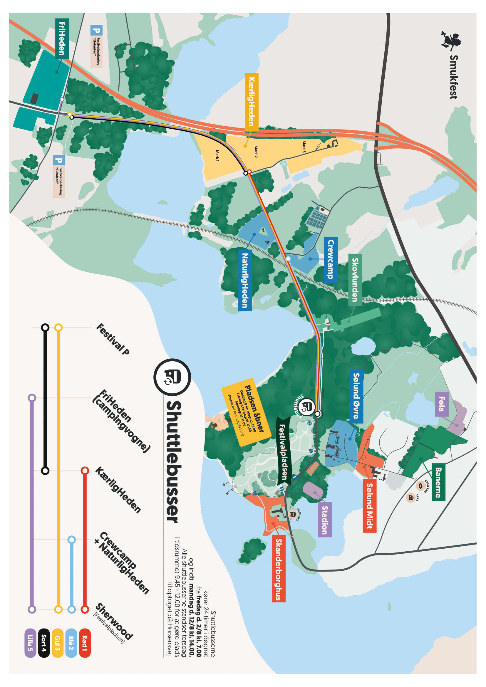

Shuttlebus indenfor Smukfest
Det er meget nemt at tage med én af de mange shuttlebusser. Det følgende er Smukfest's eget kort over shuttlebusserne. De kører fast hver 30. minut.

Science Pavilion på Smukfest 2026
Det er meget nemt at tage med én af de mange shuttlebusser. Det følgende er Smukfest's eget kort over shuttlebusserne. De kører fast hver 30. minut.